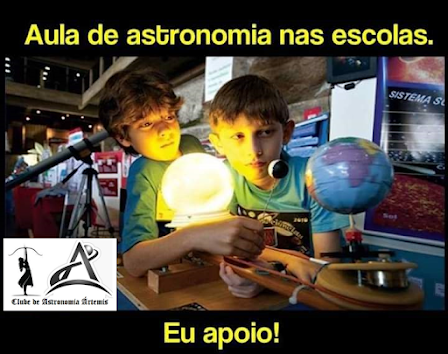

Planetário vai à Escola
Planetário vai à Escola
Qual o planeta mais quente do Sistema Solar? Em
que planeta a cor do céu é rosa e o pôr do sol é azul? Em qual
planeta o dia é maior que o ano? Essas e outras curiosidades sobre
as maravilhas da Via Láctea, você aprende nas sessões do Planetário
Inflável STARDUST dentro da sua escola!
Durante o ano, às Segundas,terças, quartas, quintas e sextas-feiras, o Planetário
Inflável STARDUST vai às escolas públicas e particulares.
Para sua escola participar dessa atividade de divulgação científica
que busca despertar o interesse de todos pela Astronomia, basta
entrar em contato com a Coordenação de Educação em astronomia do
Clube de Astronomia Artemis.
O primeiro contato deve ser feito através do email planetariostardust@gmail.com
ou nosso whatsApp,
constando o nome da escola, endereço e telefone de contato.
O próximo passo é aguardar o agendamento da visita técnica que é
realizada por Milton Pereira ,professor, planetarista e responsável
pelo projeto. Nesta visita, são avaliadas as condições mínimas
necessárias para a instalação do planetário inflável da STARDUST na
escola. Veja as regras no menu Especificações
Técnicas.

Ual! Nossa! Que legal! ...São algumas das expressões que se ouvem em vários momentos das sessões de Planetário:
Quando começa o anoitecer e surgem inúmeras estrelas; quando são projetadas as constelações; quando comparamos os tamanhos da Terra e do Sol; ou ainda quando comparamos o Sol com a estrela Antares. Após as sessões, as perguntas que são feitas pelos estudantes e o brilho nos olhos das crianças dão a certeza de que o Planetário cumpriu seu principal papel: ensinar, divulgar e maravilhar. Em “O mundo assombrado pelos demônios: A ciência vista como uma vela no escuro“, ao relatar sua experiência de divulgação da ciência para estudantes das séries iniciais da educação básica, Carl Sagan afirma: As crianças inteligentes e curiosas são um recurso nacional e mundial. Precisam receber cuidados, ser tratadas com carinho e estimuladas. Mas o mero estímulo não é suficiente. Temos de lhes dar também as ferramentas essenciais com que pensar (Sagan, 1996: 313). Eis o nosso desafio: dar aos estudantes as ferramentas essenciais com que pensar, considerando principalmente o contexto histórico e social em que vivemos. Apesar das rápidas mudanças que caracterizam a sociedade atual, nosso modelo de educação permanece arraigado a conceitos como verdade absoluta, certeza, transmissão do conhecimento e outros. Em Aprendizagem Significativa Crítica, Moreira (2005: 5) resume: Nossa educação fundamental acaba com a capacidade natural que as crianças têm de perguntar e as transformam em memorizadoras de respostas corretas para coisas que elas não perguntam. Espaços de educação não formal como Planetários, observatórios, museus e centros de ciências aliados em potencial para a construção e adequada dessas ferramentas essenciais que permitirão ao aluno aprender a aprender e ao cidadão ampliar seu horizonte de conhecimento. A visitação a esses espaços precisa, contudo, ser planejada e realizada de forma a favorecer a aprendizagem significativa, além de despertar o interesse e a admiração dos estudantes e do público como um todo para as ciências. Ficou curioso? Aqui vão algumas dicas para que você e seu filho aproveitem ao máximo uma visita ao planetário:
1. Crie expectativa na criança.
Ter curiosidade sobre o que se vai ver ajuda muito a prender a atenção da criança e é uma ferramenta importantíssima para o aprendizado. Pensar sobre o que se espera, se o céu no espaço é muito diferente do que vemos daqui, o que são constelações e porque a relação do homem com os astros é importante pode tornar a compreensão mais fácil e fazer surgir outras perguntas.
2. Ajude seu filho prestar atenção ao céu noturno.
Pergunte a ele sobre o que verá. Consegue identificar alguma estrela ou planeta? O que imagina que existe lá? Será que o céu natural é muito diferente do que se vera num planetário? Fazer um exercício de criatividade também pode ser bastante divertido. Se fosse um astrônomo, que nome daria ás estrelas que consegue ver? Comparar este exercício de criatividade e imaginação com aquilo que será visto pode ajudar a criança a reter as informações mais facilmente.
3. Encontre a sessão que mais se adequa ao seu filho.
Planetários normalmente têm sessões variadas e cada uma delas pode tratar de um tema específico. Pode haver muita diferença de foco e linguagem utilizada em cada apresentação, e é interessante checar o programa e procurar saber a que público cada sessão se destina. Quanto mais seu filho compreender o que é dito, mais poderá aproveitar a informação que está recebendo.
4. Encoraje seu filho a fazer perguntas após a sessão.
E não tenha vergonha de colocar suas próprias dúvidas ou comentários também. Se desejar saber mais sobre algo que chamou sua atenção, sacie sua curiosidade. Pode ser uma ótima oportunidade para você e seu filho aprenderem mais sobre vários temas relacionados á Física, Matemática, Geografia e muitas outras áreas do conhecimento.
5. Estimule seu filho a conversar sobre o que viu.
O que mais chamou a atenção da criança? Qual foi sua sensação ao ver a projeção? De que planeta ou estrela gostou mais? De quantos astros consegue recordar o nome? Fazer perguntas e deixar a criança á vontade para falar é uma boa forma de fixar o conhecimento e um estímulo para participar de outras atividades relacionadas ao tema.
6. Dedique tempo para levar seu filho ás exibições e outras atividades normalmente oferecidas pelos Planetários.
É uma boa maneira de se familiarizar com o tema e contextualizar o que será ou o que foi visto na sessão. E é um tempo em que você e seu filho terão para fazer conexões com outras disciplinas, elaborar mais perguntas e dar mais sentido aquilo que a criança está aprendendo na escola - mas de uma forma muito mais lúdica e pessoal.